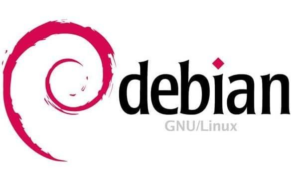

Debian es una organización formada totalmente por voluntarios dedicada a desarrollar software libre y promocionar los ideales de la comunidad del software libre. El Proyecto Debian comenzó en 1993, cuando Ian Murdock hizo una invitación a todos los desarrolladores de software a contribuir a una distribución completamente coherente basada en el, entonces relativamente nuevo, núcleo Linux. Ese grupo relativamente pequeño de entusiastas, al principio patrocinados por la Free Software Foundation e influenciados por la filosofía GNU, ha crecido a lo largo de los años hasta convertirse en una organización de alrededor de 1026 desarrolladores Debian.
